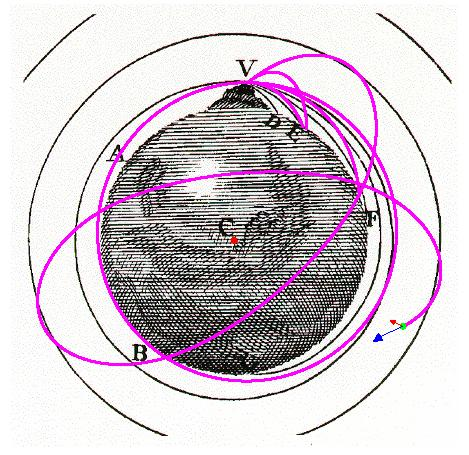

NewtonsMountain
General Description
This simulation illustrates the motion of a projectile launched from the top of a VERY tall mountain on Earth. The diagram shown in the simulation is taken from Newton's A Treatise on the System of the World, which he wrote after the Principia, but the basic idea is found in the Principia itself. Newton concluded that a projectile launched horizontally with sufficient speed would orbit Earth rather than crashing to Earth's surface. Thus the motion of a projectile fired on Earth was not qualitatively different from that of the moon orbiting Earth.
The simulation allows the user to adjust the initial speed and launch angle of the projectile using sliders. The projectile is launched from the top of the mountain (note that the mountain shown in the diagram is ridiculously tall - such a mountain would stick out above Earth's entire atmosphere). The motion of the projectile is calculated using Newton's Second Law of motion and Newton's Universal Law of Gravitation.
The user has the option to allow the projectile to pass through Earth. The Earth is treated either as a homogeneous sphere (the default) or as a point mass located at its center (if selected in the Model Options menu). The homogeneous sphere is more realistic, but using the point mass can help illustrate the "true" shape of the projectile's path before it hits Earth.
Newton's Mountain
Model Options Menu
- Let Projectile Pass Through Earth: allows the projectile to pass into and through Earth, treating Earth as either a homogeneous sphere or a point mass.
- Treat Earth As Point Mass: model Earth as a point mass. If not selected, Earth is modeled as a homogeneous sphere.
Visual Elements
- The background is a diagram from Newton's A Treatise on the System of the World showing Earth with a VERY tall mountain at the top. The lines on the diagram show the paths of projectiles launched from the mountain top, or satellites (moons) orbiting Earth.
- Green disk: the projectile.
- Red spot: the center of Earth, labeled C in the diagram.
- Blue arrow: represents the projectile's current velocity.
- Red arrow: represents the force on the projectile, (or the projectile's current acceleration).
- Magenta trace: trace of the object's path.
Controls
- Play/Pause: start and stop the simulation.
- Step: advance the simulation by one time step.
- Reset: reset the simulation to its initial state.
- Clear Traces: clears all traces of the object's path.
- Initialize: read in values and place the projectile back on the mountain top. Note that any changes to the parameter values will not take effect until the Initialize button is clicked.
- Initial Speed: sets the initial speed of the object (in km/s).
- Launch Angle: sets the launch angle for the projectile (in degrees). The angle is measured counterclockwise with zero degrees corresponding to a horizontal launch to the right.
Todd K. Timberlake (ttimberlake@berry.edu)
Mario Belloni (mabelloni@davidson.edu)